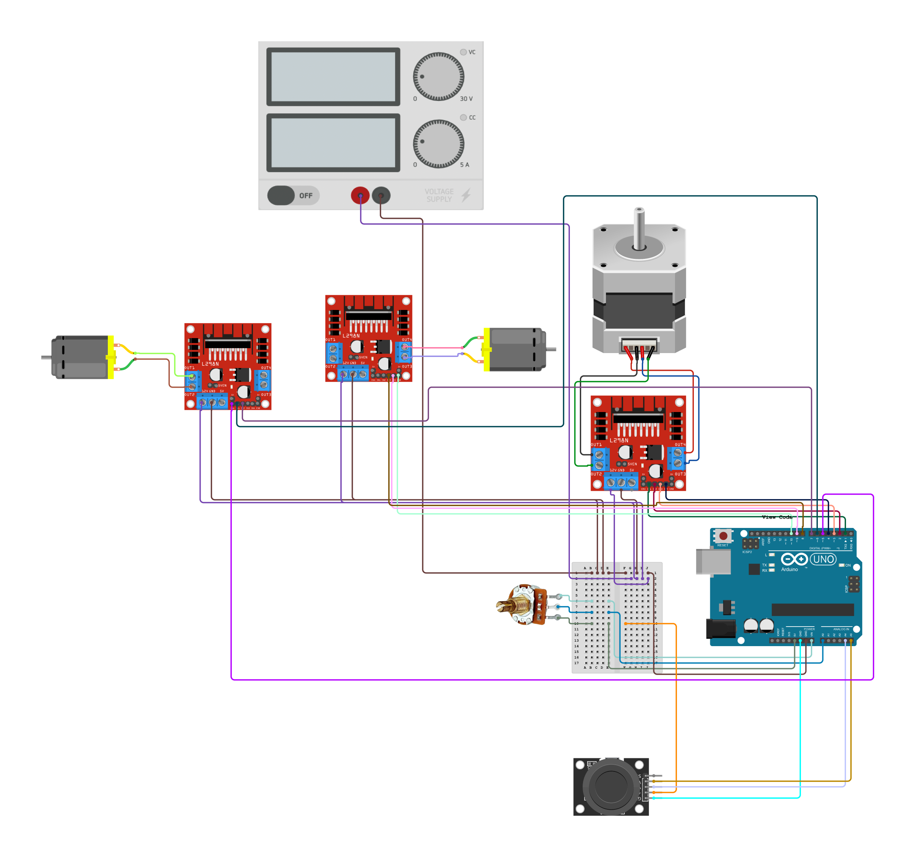

WeBowling is an interactive telepresence bowling game that beautifully merges the timeless joy of classic gameplay with the wonders of modern technology. By using a joystick, players can remotely unleash their bowling ball's potential, creating a captivating and engaging experience that transcends distance and brings people together in the spirit of fun and competition.
📌 Built as part of MISTI Bahrain 2025: Actuated Experiences: Design and Fabrication for Interactivity (Advanced)
1
Remote-Controlled Bowling
Players can use a joystick to launch the bowling ball remotely for a unique telepresence gaming experience.
2
User-Friendly Interaction
Simple joystick controls allow for easy aiming and launching.
3
Replayable Gameplay
The option to restart and replay the game keeps the fun going by elevating the triangle, and showcasing engineering and interactive design principles in practice.
4
Effortless Integration of Electronic Systems
The system is powered by an Arduino UNO, which processes user inputs from the joystick and potentiometer to control the motors efficiently.
Created using multicolor 3D printing.
Manufactured with TPU flexible material.
Designed with living hinges, and finger joints used for strong and precise assembly.
Custom branding using laser etching for a polished finish, and used living hinges to create smooth curves, adding flexibility and aesthetics to the structure.
Constructed using finger joints and glowing wood as a ball track to control its movement.
The electronics and control system of WeBowling is designed to enable precise motorized control for launching the bowling ball, ensuring smooth and interactive gameplay. The system integrates Arduino, stepper and DC motors, motor drivers, and joystick-based controls to bring the game to life.
This circuit is designed to control a stepper motor and two DC motors using an Arduino UNO microcontroller. The stepper motor is driven by an L298N DC motor driver, which the Arduino controls through digital pins. The DC motors are also connected to separate L298N motor drivers for independent control. A rotary potentiometer is used to adjust the speed of the motors, and a KY-023 Dual Axis Joystick Module is used for directional control. The power supply provides the necessary voltage to the motor drivers and the Arduino.
You will require the following hardware to make Arduino WeBowling.
| S.no | Component | Value | Qty |
|---|---|---|---|
| 1. | Arduino | UNO R3 | 1 |
| 2. | Stepper Motor | NEMA 17 Bipolar | 1 |
| 3. | DC Motors | RS390 | 2 |
| 4. | L298N Dual H-Bridge Motor Driver | - | 3 |
| 5. | Joystick Module | KY-023 Dual Axis | 1 |
| 6. | Rotary Potentiometer | 20K Ohm | 1 |
| 7. | Jumper Wires | - | - |
| 8. | Breadboard | 170 point | 1 |
| 9. | Linear bearings | - | 5 |
| 10. | Stainless steel bars | - | 1 |
| 11. | Threaded rod | - | 1 |
| 12. | Copper Nut | - | 1 |
| 13. | Flexible Coupling Coupler | - | 1 |
| 14. | L Bracket Stainless | 1" x 1/2" ZINC | 18 |
| 15. | Laboratory Power Supply Unit | - | 1 |
| 16. | Banana Plug to Alligator Clip Test Lead Wire Cable | - | 2 |
| 17. | USB A Male to B Male Cable | - | 1 |
| 18. | 3D Printer Filament | - | 1 |
| 19. | Wood | - | - |
| 20. | Wood glue | - | - |
In the making of this WeBowling, first, print bowling pins, flywheels, and laser cutting the body cover, as well as the bowling alley and mechanism box. Then, assemble the bowling alley. With just an Arduino, a DC motor, a stepper motor, a dual H-Bridge motor driver, a rotary potentiometer, and a joystick module, you can follow the steps to build a circuit.
Make connections according to the circuit diagram given below.
First, you need to install Arduino IDE Software from its official website Arduino.
Then, For this project, we use the Stepper library to control the stepper motor. Follow these steps:
Now copy the following code and upload it to Arduino IDE Software.
// Include necessary libraries
#include <Stepper.h> // Arduino Stepper Library
// Pin definitions for motor control
const int ENA = 5; // PWM pin for motor A speed control
const int IN1 = 6; // Direction pin 1 for motor A
const int IN2 = 7; // Direction pin 2 for motor A
const int IN3 = 8; // Direction pin 1 for motor B
const int IN4 = 9; // Direction pin 2 for motor B+
const int ENB = 10; // PWM pin for motor B speed control
// Analog joystick pins
const int X_PIN = A3;
const int Y_PIN = A4;
// Potentiometer pin for speed control
const int SPEED_CONTROL = A0;
// Stepper motor constants
const int STEPS_PER_REV = 255;
Stepper stepper_NEMA17(STEPS_PER_REV, 1, 2, 3, 4); // Initialize Stepper
// Threshold values
const int THRESHOLD_TURN_RIGHT = 4;
const int THRESHOLD_TURN_LEFT = 1000;
const int NEUTRAL_THRESHOLD_MIN = 450;
const int NEUTRAL_THRESHOLD_MAX = 550;
const int FORWARD_THRESHOLD = 6;
// Motor speed range
const int MIN_SPEED = 0;
const int MAX_SPEED = 80;
// Function to stop DC motors
void stopDCMotors() {
analogWrite(ENA, 0);
analogWrite(ENB, 0);
digitalWrite(IN1, LOW);
digitalWrite(IN2, LOW);
digitalWrite(IN3, LOW);
digitalWrite(IN4, LOW);
}
// Function to drive motors forward
void driveForward(int speed) {
analogWrite(ENA, speed); // Set motor A speed
analogWrite(ENB, speed); // Set motor B speed
digitalWrite(IN1, HIGH); // Motor A forward
digitalWrite(IN2, LOW);
digitalWrite(IN3, HIGH); // Motor B forward
digitalWrite(IN4, LOW);
}
// Function to stop the stepper motor
void stopStepperMotor() {
// Fully de-energize the stepper motor coils
digitalWrite(1, LOW);
digitalWrite(2, LOW);
digitalWrite(3, LOW);
digitalWrite(4, LOW);
}
void setup() {
// Initialize Serial communication for debugging
Serial.begin(115200);
// Set joystick pins as inputs
pinMode(X_PIN, INPUT);
pinMode(Y_PIN, INPUT);
// Set motor control pins as outputs
pinMode(ENA, OUTPUT);
pinMode(ENB, OUTPUT);
pinMode(IN1, OUTPUT);
pinMode(IN2, OUTPUT);
pinMode(IN3, OUTPUT);
pinMode(IN4, OUTPUT);
// Stop motors at the start
stopDCMotors();
stopStepperMotor();
Serial.println("Setup complete.");
delay(100); // Short delay for setup stabilization
}
void loop() {
// Read joystick values
int xData = analogRead(X_PIN);
int yData = analogRead(Y_PIN);
// Debug joystick data
Serial.print("X-Data: ");
Serial.print(xData);
Serial.print("\tY-Data: ");
Serial.print(yData);
// Read potentiometer and map to motor speed
int sensorReading = analogRead(SPEED_CONTROL);
int motorSpeed = map(sensorReading, 0, 1023, MIN_SPEED, MAX_SPEED);
// Control stepper motor based on joystick Y-axis
if (yData < THRESHOLD_TURN_RIGHT) { // Turning right
Serial.print(" | Action: Turning Right");
if (motorSpeed > 0) {
stepper_NEMA17.setSpeed(motorSpeed); // Set speed
stepper_NEMA17.step(-STEPS_PER_REV); // Turn right
}
} else if (yData > THRESHOLD_TURN_LEFT) { // Turning left
Serial.print(" | Action: Turning Left");
if (motorSpeed > 0) {
stepper_NEMA17.setSpeed(motorSpeed); // Set speed
stepper_NEMA17.step(STEPS_PER_REV); // Turn left
}
} else if (xData < FORWARD_THRESHOLD) { // Moving forward
Serial.print(" | Action: Moving Forward");
driveForward(255); // Full speed forward
delay(3000); // Move forward for 3 seconds
stopDCMotors(); // Stop after moving forward
} else if (xData >= NEUTRAL_THRESHOLD_MIN && xData <= NEUTRAL_THRESHOLD_MAX &&
yData >= NEUTRAL_THRESHOLD_MIN && yData <= NEUTRAL_THRESHOLD_MAX) {
// Joystick in neutral position
Serial.print(" | Action: Neutral - Stopping Stepper Motor");
stopStepperMotor(); // Stop the stepper motor
} else {
Serial.print(" | Action: Stopped");
stopDCMotors(); // Stop all motors
stopStepperMotor(); // Stop the stepper motor
}
Serial.println(""); // Newline for debug readability
delay(100); // Short delay for loop stabilization
}
🎬 Watch WeBowling in action!